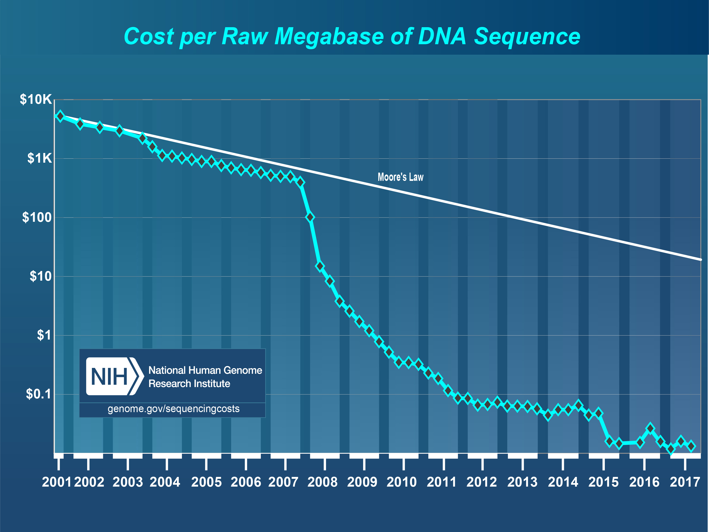

Application of WGS to antimicrobial resistance detection and surveillance
Kelsey Florek, MPH, PhD 2018 ARLN Regional Meeting July 25, 2018
Slides available at:
www.k-florek.net/talks
How sequencing works
WSLH pipelines and applications
CRE sequencing project

Any sufficiently advanced technology is indistinguishable from magic.
- Arthur C. Clarke
How sequencing works
short read
- 300bp max
- millions of reads
- 99.9999% accuracy
- low cost per sample
long read
- 2.3mb reads
- thousands of reads
- 98% accuracy
- high cost per sample


{kind=link}
Analyzing sequencing data and reconstructing genomes
Issues with repeats and short reads

WSLH pipelines and applications
Bucky-TR pipeline
- Trimmomatic
- Unicycler
- MLST
- ABRicate
- resFinder
- CARD
- NCBI
Results of Bucky-TR
- ~800 Salmonella isolates
- ~230 E. coli isolates
- ARLN isolates:
- IMP-13 (Enterobacter cloacae)
- IMP-27 (Providencia rettgeri)
- NMC (Enterobacter cloacae)
- IMI (Enterobacter asburiae)
- OXA-23 (Acinetobacter baumannii)(3)
- MIR-1 (Enterobacter cloacae)
CRE sequencing project
Summary
- 2011 outbreak - National Institutes of Health Clinical Center
- 19 patients
- 2 were colonized 2-4 years
- plasmids undergo dynamic hybridization
WLSH Study
Gain a better picture of the dynamics of KPC resistant plasmids in Wisconsin.
- 2011 - 2017
- 180 total isolates
- MinIon and PacBio
- PCR confirmed KPC (OXA,IMP,VIM,NDM)